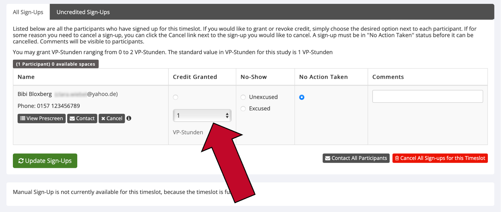
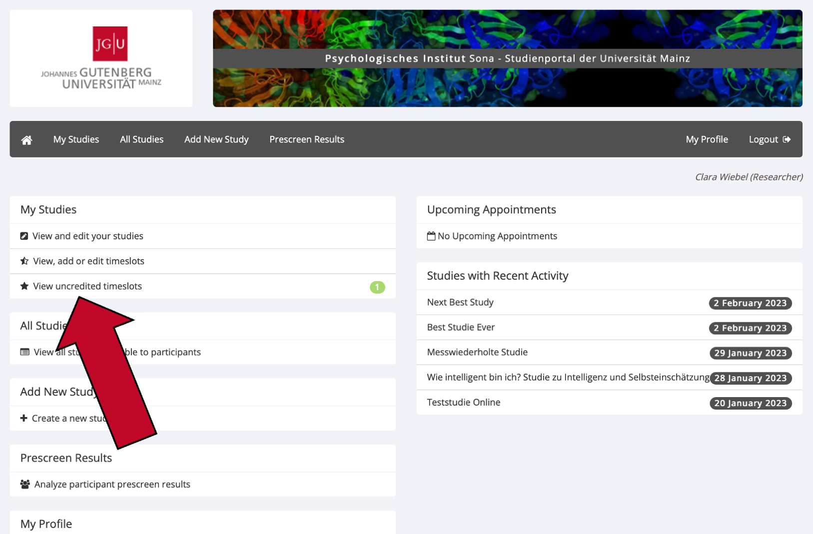
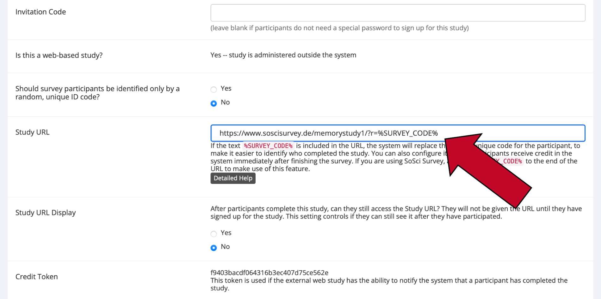
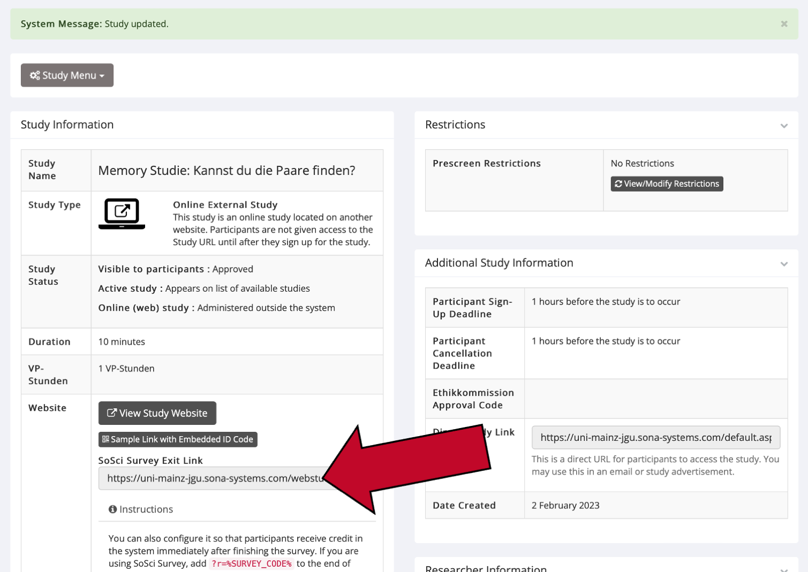
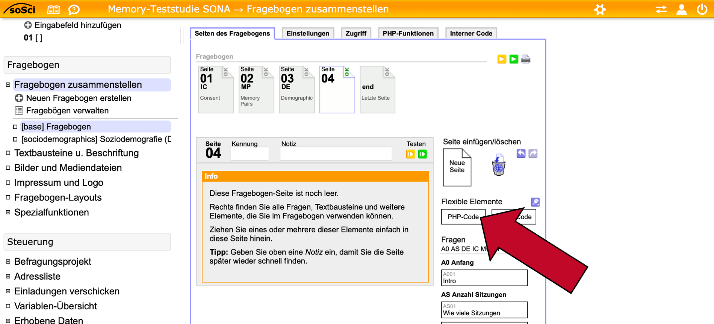
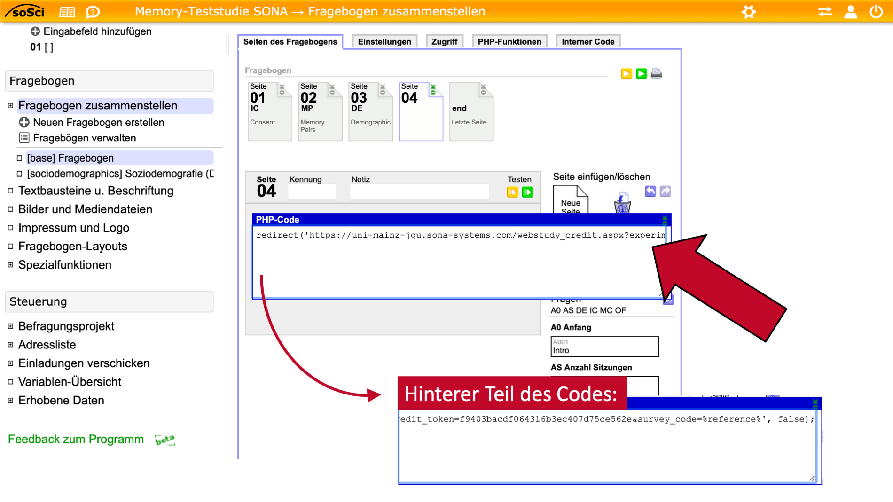
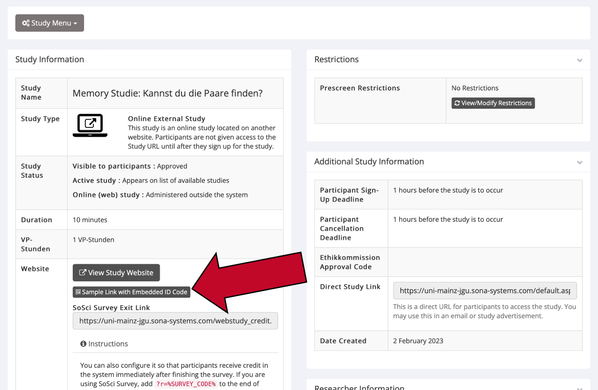
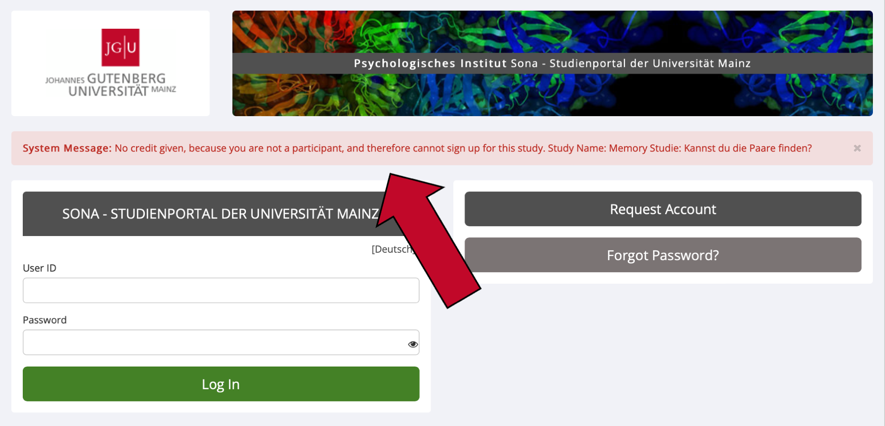

4 Vergütung
4.1 Wie viele VP-Stunden darf ich vergeben?
Die Anzahl der Versuchspersonen-Stunden (VP-Stunden), die Sie für die Teilnahme an einer Studie vergeben dürfen, entspricht der Dauer der Studie. Da die kleinste Einheit einer VP-Stunde ein halbe VP-Stunde (0,5) ist, wird im Zweifelsfall aufgerundet.
- Beispiel 1: Eine Online-Studie dauert 10 Minuten. Für die Teilnahme können Sie 0,5 VP-Stunden vergeben.
- Beispiel 2: Eine Laborstudie dauert 70 Minuten. Für die Teilnahme können Sie 1,5 VP-Stunden vergeben.
Bei Laborstudien zählt eine ggf. nötige Vor- und Nachbereitungszeit, bei der die Versuchsperson anwesend ist, selbstverständlich zur Dauer der Studie dazu. Bei Laborstudien kann es zudem passieren, dass die Studie länger dauert als geplant. In diesem Fall können Sie die vergebenen VP-Stunden anpassen (sehen Sie dazu den Abschnitt Was ist, wenn eine Studie länger oder kürzer dauert als geplant? in diesem Handbuch). Falls eine Versuchsperson die Teilnahme an einer Laborstudie vorzeitig abbricht, vergeben Sie ihr bitte so viele VP-Stunden, wie sie Zeit im Experiment verbracht hat.
4.2 Was ist, wenn eine Studie länger oder kürzer dauert als geplant?
Wenn eine Laborstudie länger dauert als geplant, können Sie die vergebenen VP-Stunden anpassen (lesen Sie auch den Abschnitt Wie vergebe ich VP-Stunden für Laborstudien?). Fügen Sie bei der Vergabe der VP-Stunden bitte einen entsprechenden Kommentar bei.
Wenn eine Versuchsperson in Ihre Studie schneller bearbeitet hat als geplant, müssen Sie ihr dennoch die in der Studienbeschreibung genannten VP-Stunden vergeben. Nur wenn Versuchspersonen die Teilnahme an Ihrer Studie abbrechen, können Sie weniger VP-Stunden vergeben. Vergeben Sie in diesem Fall bitte so viele VP-Stunden, wie die Versuchsperson Zeit im Experiment verbracht hat.
Vergeben Sie bei Online-Studien bitte immer die in der Studienbeschreibung genannten VP-Stunden, vorausgesetzt die Versuchsperson hat vollständig an Ihrer Studie teilgenommen. Falls nicht, vergeben Sie bitte 0 (null) VP-Stunden.
4.3 Kann ich die Versuchsteilnahme durch besondere Anreize (z.B. Teilnahme an einer Lotterie) zusätzlich vergüten?
Aus Gründen der Fairness gegenüber anderen Forschenden ist es nicht vorgesehen, dass Studien, die mit VP-Stunden vergütet werden, zusätzlich mit Geld oder einer alternativen Vergütung entlohnt werden. Wahlweise eine Alternative zur Vergütung mit VP-Stunden anzubieten (z.B. VP-Stunden oder Geld) ist natürlich zulässig. Von dieser Regel ausgenommen sind kleine nicht-monetäre Anreize während der Studie wie z.B. Schokolade. Weiterhin können bei Studien, deren Versuchsdesign das Auszahlen zusätzlicher Anreize vorsieht (z. B. im Rahmen leistungsabhängiger Belohnung), Ausnahmen gemacht werden. Kontaktieren Sie dazu im Zweifelsfall die Administration, um Details zu besprechen.
4.4 Wie vergebe ich VP-Stunden für Laborstudien?
Wenn Versuchspersonen erfolgreich an Ihrer Laborstudie teilgenommen haben, vergeben Sie bitte die entsprechenden VP-Stunden innerhalb von 3 Werktagen.
- Klicken Sie in der Menüleiste auf
My Studiesund klicken Sie auf den Namen der betreffenden Studie. - Wählen Sie im Study Menu (ganz oben und ganz unten auf der Seite) den Punkt
View/Admister Time Slots. - Klicken Sie beim Timeslot der betreffenden Versuchsperson rechts auf
Modify.- Klicken Sie bei
Credit Grantedauf den kleinen Punkt, um die angezeigt Anzahl an VP-Stunden zu vergeben. - Falls die Studie länger gedauert hat als geplant oder die Versuchsperson die Studie abgebrochen hat, können Sie die Anzahl der vergebenen VP-Stunden im Drop-Down Menü unter dem Punkt anpassen. Hinterlassen Sie in diesem Fall bitte einen kurzen Kommentar in der Spalte rechts. Sie müssen, sofern die Versuchsperson vollständig an Ihrer Studie teilgenommen hat, immer mindestens die in der Studienbeschreibung genannten VP-Stunden vergeben. Selbst, wenn die Versuchsperson Ihre Studie sehr schnell bearbeitet hat. Nur wenn Versuchspersonen die Teilnahme an Ihrer Studie abbrechen können Sie weniger VP-Stunden vergeben.
- Falls Sie alternativ zu VP-Stunden eine andere Vergütung für die Studienteilnahme angeboten haben und die Versuchsperson diese alternative Vergütung gewählt hat, wählen Sie bitte unter
Credit granted0 VP-Stunden aus. Vermerken Sie die alternative Vergütung bitte in der Kommentarspalte rechts.
- Klicken Sie bei
- Klicken Sie auf
Update Sign-Ups, um Ihre Eingabe zu speichern.

Wenn Sie sich im Hauptmenü befinden (direkt nach der Anmeldung), sehen Sie außerdem den Menüpunkt View Uncredited Timeslots. Hier gelangen Sie direkt zu einer Übersicht über alle Timeslots Ihrer Studien, die bereits in der Vergangenheit liegen, aber für die noch keine VP-Stunden vergeben wurden (Status „Awaiting Action“). Bitte überprüfen Sie dieses Feld, wenn dort Einträge gelistet sind (grünes Zeichen erscheint rechts) und aktualisieren Sie den Status der aufgeführten Timeslots. Lesen Sie den Abschnitt Was tue ich, wenn angemeldete Versuchspersonen nicht zu ihrem Termin erscheinen? für mehr Informationen, falls die Versuchsperson im betreffenden Timeslot nicht am Experiment teilgenommen hat.

Sollten Sie die Vergabe der VP-Stunden nicht zeitnah erledigen, erhalten Sie System-E-Mails von Sona, die sie darauf hinweisen. Eine automatisierte Vergabe von VP-Stunden für Laborstudien durch Sona kann nicht erfolgen, da Sie bestätigen müssen, dass die Versuchspersonen tatsächlich zu Ihrem Experiment erschienen sind.
4.5 Wie vergebe ich VP-Stunden für Online-Studien?
Bei Online-Studien haben Sie zwei Möglichkeiten, Versuchspersonenstunden zu verteilen, nämlich automatisch oder manuell. Die automatische Vergabe von VP-Stunden ist sehr praktisch, da die VP-Stunden sofort vergeben werden, sobald die Versuchsperson die letzte Seite Ihrer Online-Studie erreicht hat. Dies funktioniert über einen Link, der die Versuchspersonen am Ende Ihrer Online-Studie zur Sona Website zurückleitet. Da SoSci Survey an der Universität Mainz der beliebteste Host für Online-Studien ist, ist hier die Integration mit SoSci Survey genauer beschrieben. Sona unterstützt allerdings auch viele weitere Hosts für Online-Studien. Eine Dokumentation zur Integration der anderen Host-Websiten finden Sie hier: https://www.sona-systems.com/help/.
Zudem finden Sie viele weitere Informationen zur automatischen Vergabe von VP-Stunden hier: https://www.sona-systems.com/researcher_categories/online-external-studies/.
Automatische Vergabe über SoSci-Survey
- Loggen Sie sich in Sona ein und klicken Sie in der Menüleiste auf
My Studies. Klicken Sie danach auf den Titel Ihrer Online-Studie. - Klicken Sie unten auf der Seite auf
Change Study Informationund scrollen Sie zum Unterpunkt „Study URL“. - Fügen Sie am Ender der Study URL
?r=%SURVEY_CODE%ein. Lautet die URL Ihrer SoSci-Umfrage beispielsweisehttps://www.soscisurvey.de/memorystudy1/, dann ändern Sie diese zuhttps://www.soscisurvey.de/memorystudy1/?r=%SURVEY_CODE%.

- Speichern Sie die Änderungen, indem Sie ganz unten auf der Seite auf
Save Changesklicken. - Wenn Sie nun zurück auf die Studienübersicht gelangen, sehen Sie unter „Website“ einen SoSci Survey Exit Link. Dieser sieht beispielsweise so aus:
https://uni-mainz-jgu.sona-systems.com/webstudy_credit.aspx?experiment_id=8&credit_token=f9403bacdf064316b3ec407d75ce562e&survey_code=%reference%. Kopieren Sie diesen Link in Ihre Zwischenablage.

- Loggen Sie sich nun in SoSci Survey ein und wählen Sie Ihre Studie aus.
- Klicken Sie in der Randleiste links auf
Fragebogen zusammenstellen. - Fügen Sie nach der letzten Seite Ihres Fragebogens eine neue Seite ein.
- Ziehen Sie per Drag and Drop das Element
PHP-Codein die neue Seite.

- Fügen Sie den folgenden Befehl in das PHP-Code Fenster ein:
redirect('https://exit-link-zu-ihrer-studie', false);, wobei „https://exit-link-zu-ihrer-studie“ der SoSci Survey Exit Link aus Ihrer Zwischenablage ist. Das Argument „false“ am Ende des redirect-Befehls legt fest, dass die Studie an dieser Stelle zu Ende ist und in SoSci Survey als abgeschlossen markiert werden kann.

- Die Integration ist nun abgeschlossen! Sie sollten nun testen, ob die automatische Vergabe der VP-Stunden funktioniert, bevor Sie Ihre Studie in Sona auf „active“ setzen.
- Klicken Sie dafür in der Übersicht Ihrer Studie in Sona auf den Knopf
Sample Link with Embedded ID Code.

- Bearbeiten Sie Ihre Studie bis zum Ende, damit Sie zur Sona Website zurückgeleitet werden.
- Stellen Sie sicher, dass Sie die folgende Nachricht auf Sona erhalten: “System Message: No credit given, because you are not a participant, and therefore cannot sign up for this study. Study Name: [Name Ihrer Studie]”. Wichtig ist, dass der angezeigte Name der Studie mit Ihrer Studie übereinstimmt. Ist dies der Fall, funktioniert die automatische Vergabe der VP-Stunden für Ihre Studie. Weitere Informationen zur Überprüfung der automatischen VP-Stunden-Vergabe und Hilfe bei möglichen Problemen finden Sie unter dem folgenden Link: https://www.sona-systems.com/help/integration_test/

Die drei häufigsten Probleme bei der Einrichtung einer automatischen VP-Stunden-Vergabe sind:
- Die Studie ist als falsche Art von Studie in Sona eingestellt. Stellen Sie sicher, dass es sich um eine „Online External Study“ handelt.
- Die URL, zu der die Versuchspersonen am Ende der Umfrage weitergeleitet werden, ist falsch. Diese URL ist für jede Studie in unserem System einzigartig. Wenn Sie beispielsweise eine alte SoSci Survey Umfrage wiederverwenden und eine neue Studie in Sona erstellen, müssen Sie die URL in der SoSci Survey Umfrage aktualisieren, damit automatisch VP-Stunden vergeben werden können.
- Tippfehler beim Einfügen von %SURVEY_CODE% in das Feld
Study-URLin Sona (Schritt 3). Der Link muss genau wie in dieser Dokumentation beschrieben verändert werden, sonst funktioniert es nicht.
Weitere Informationen zur automatischen Vergabe von VP-Stunden über SoSci Survey finden Sie unter: https://www.sona-systems.com/help/soscisurvey/
Manuelle Vergabe von VP-Stunden bei Online-Studien.
Eine automatische Vergabe von VP-Stunden ist nicht immer sinnvoll oder möglich, beispielsweise wenn…
- Sie eine externe Website nutzen, die nicht von Sona für eine automatische Vergabe von VP-Stunden unterstützt wird,
- Sie eine alternative Vergütung neben VP-Stunden anbieten, oder
- Sie die automatische Vergabe nicht über einen Link vornehmen möchten.
Für eine manuelle Vergabe sollten Sie überprüfen, welche der angemeldeten Versuchspersonen tatsächlich bis zum Ende Ihrer Studie teilgenommen haben. Am einfachsten ist es, wenn Sie im Rahmen Ihrer Online-Studie den Sona-Benutzernamen oder Namen der Teilnehmer*innen erfragen, bestenfalls in einem vom Datensatz getrennten freien Eingabefeld. Vergleichen Sie diese Daten nach Ende Ihrer Erhebung mit der Liste von angemeldeten Versuchspersonen in Sona. Bitte vergeben Sie die Versuchspersonenstunden wie folgt:
- Bei erfolgter Teilnahme: die entsprechende Anzahl an VP-Stunden aus der Studienbeschreibung
- Bei alternativer Vergütung: 0 VP-Stunden und einen entsprechenden Kommentar
- Bei Nicht-Teilnahme: entschuldigtes Fehlen („Excused No-Show“)